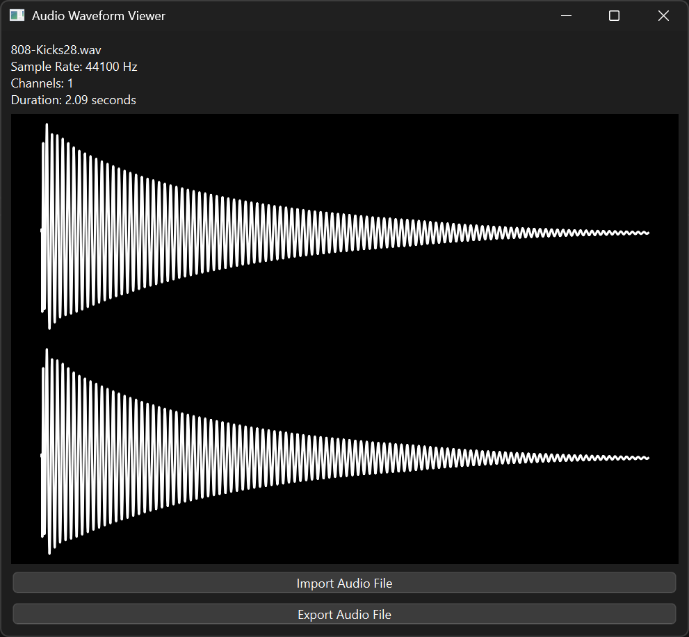
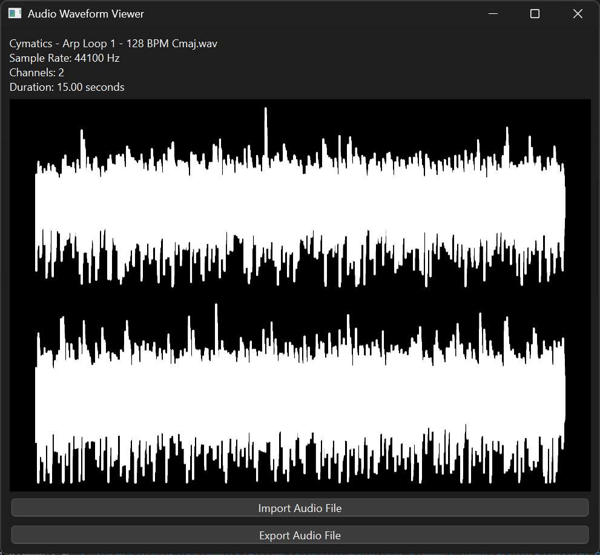
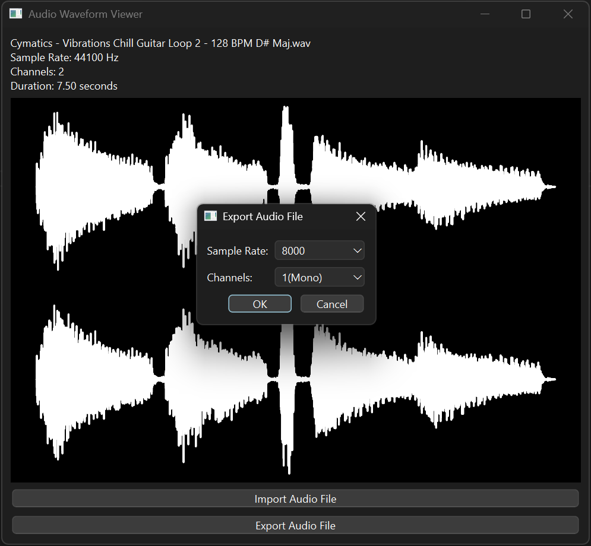

About

Haruki
大阪公立大学工業高等専門学校 知能情報コース 2年生
情報系を学習中

Haruki
大阪公立大学工業高等専門学校 知能情報コース 2年生
情報系を学習中
制作時期2025年2月
作成時間:約10時間
  PySide6、soundfile、Matplotlibを使った、音声ファイルの波形と詳細を表示し、サンプリングレートとモノラル・ステレオの編集ができるツールです。音声ファイルをインポートすると、ファイル名、サンプリングレート、チャンネル数（モノラル・ステレオ）、長さを表示します。また、音声の波形を表示します。モノラル音声であれば、同じ波形が二つ表示されます。 ステレオの音声であれば、上に左チャンネル、下に右チャンネルの波形が表示されます。サンプリングレートとチャンネル数を変更してエクスポートすることができます。
GitHub制作時期2025年1月


PythonとPygameで作成した、ドラムシーケンサー、リズムマシンを再現したアプリケーションです。6つのドラム音にそれぞれの行が割り振られ、その中にノーツを配置することで、ドラムパートを作成し、再生し、聞くことができます。TR-808のドラム音源(フリー音源)を使用しています。マウスとキーボードのどちらにもアプリを使うための操作があります。 BPMの表示・調整も可能です。ドラム音の種類は上から順に、ベースドラム、スネアドラム、ハイハット、トム、クラップ、オープンハイハットとなっています。マス目のところをクリックすると、再生したときに、その行に割り振られている音が鳴るノーツを配置することができます。また、再生している状態で、ドラム音が割り振られた数字キーを押すと、リアルタイムで演奏してノーツを配置することができます。 ノーツを再びクリックすることで、消すことができます。また、'R'キーで全てのノーツを消去することが可能です。下のPlay/Pauseボタンをクリックする、または、スペースキーを押すと、再生・停止することができます。再生・停止ボタンの右にBPMの表示があります。その横のプラスとマイナスのボタンをクリックする、または、上下矢印キーを押すことで、BPMを10ずつ増やしたり、減らしたりできます。 キーボードの左右矢印キーを押すことで、拍子の数を変更することが可能です。
制作時期2024年10~11月

自分の班による紙コップの位置と向きを当てるUnityゲーム。開発補助をしました。
全て学校授業レベル(初級者)の使用経験はあります。